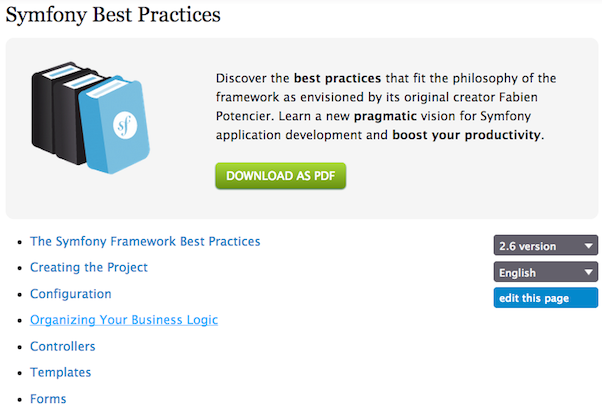
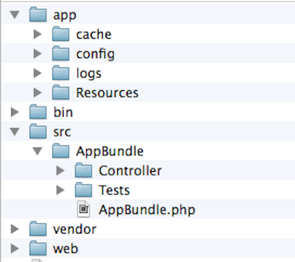

Symfony2 Tips and Tricks
Best practices from official guide & other places
Symfony Best Practices

http://symfony.com/doc/current/best_practices/index.html
Creating Project
Composer is no longer the favorite way!
$ curl -LsS http://symfony.com/installer > symfony.phar
$ sudo mv symfony.phar /usr/local/bin/symfony
$ chmod a+x /usr/local/bin/symfony
$ symfony new blogs
Project Structure

Project Structure
Create only one bundle called AppBundle for your application logic.Store all your application's templates in app/Resources/views/ directory.Store your assets in the web/ directory.
Some more best practices
Define your forms as PHP classes.Use Assetic to compile, combine and minimize web assets.Use annotations to define the mapping information of the Doctrine entities.
Assorted Tips
Always use param converters
// Not recommended
public function deleteTagAction()
{
$this->get('app.tag_manager')->deleteTag(
$this->getRequest()->get('tag_id')
);
}
Always use param converters
// Much better
public function deleteTagAction(Tag $tag)
{
$this->get('app.tag_manager')->deleteTag($tag);
}
Don't inject service container everywhere
// Service which does not need whole Container
class UserManager
{
private $container;
public function __construct(ContainerInterface $container)
{
$this->container = $container;
}
}
Don't inject service container everywhere
// Just inject the required dependency
class UserManager
{
private $em;
public function __construct(EntityManager $em)
{
$this->em = $em;
}
}
Avoid business logic in controller
// Not recommended
public function updateUserAction(User $user, $userData)
{
$user->updateFromArray($userData);
$this->getDoctrine()->getManager()->flush($user);
}
Avoid business logic in controller
// Better
public function updateUserAction(User $user, $userData)
{
$this->get('user_manager')->update($user, $userData);
}
Use JsonResponse when returning JSON
// Most common way
use Symfony\Component\HttpFoundation\Response;
$response = new Response();
$response->setContent(json_encode(array(
'data' => 123,
)));
$response->headers->set('Content-Type', 'application/json');
return $response;
Use JsonResponse when returning JSON
// Much better
use Symfony\Component\HttpFoundation\JsonResponse;
return new JsonResponse(array('data' => 123));
Optimize the autoloader
composer dump-autoload --optimizeDon't load test classes/libraries in production
{
"autoload": {
"psr-4": { "MyLibrary\\": "src/" }
},
"autoload-dev": {
"psr-4": { "MyLibrary\\Tests\\": "tests/" }
}
}
References
Find the bundle you need - KNP Bundles (http://knpbundles.com)
The 30 Most Useful Symfony Bundles (http://bit.ly/1B0bRD0)
Sound of Symfony (http://www.soundofsymfony.com/)
Bundles, No bundles, and App bundles (http://knpuniversity.com/blog/AppBundle)
Thanks!
About Me
$about = [
'name' => 'Mohammad Emran Hasan',
'title' => 'CTO, Right Brain Solution',
'email' => 'phpfour@gmail.com',
'web' => 'http://phpfour.com'
];